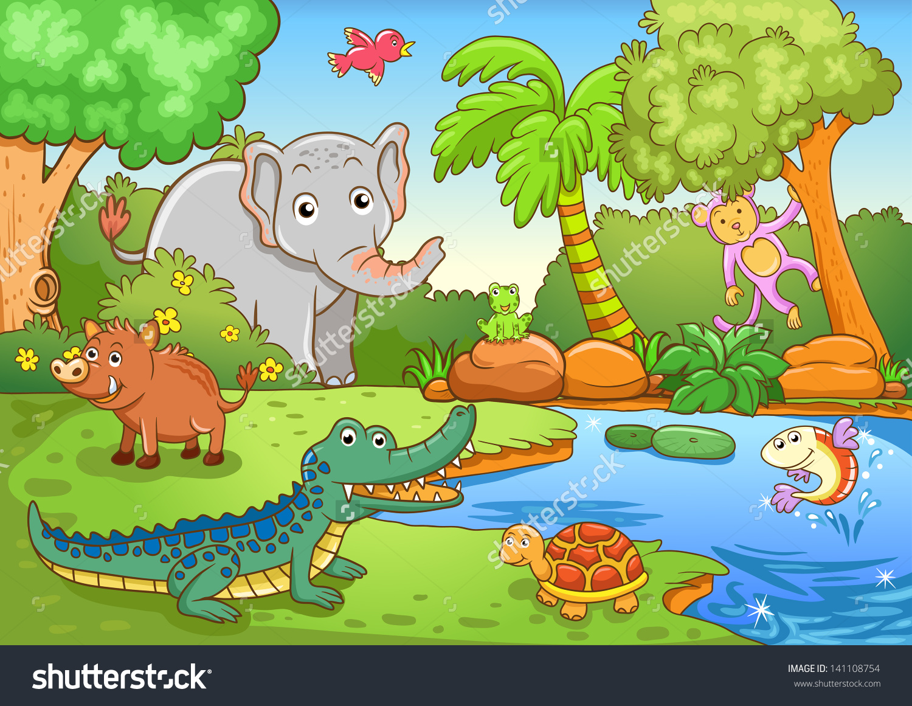

B. MENCERITAKAN KEMBALI ISI FABEL

Semua Istimewa
Ulu, seekor katak hijau, sedang berdiri di pinggir kolam. Hari itu langit sangat gelap dan hari seperti itulah yang Ulu sukai. Tidak lama kemudian, air mulai menetes perlahan-lahan dari angkasa.
“Hujan telah tiba!” Ulu berteriak dengan girang. Ulu pun mulai bersenandung sambil melompat-lompat mengitari kolam. Ia melihat semut yang kecil sedang berteduh di balik bunga matahari.
“Wahai semut, hujan telah tiba jangan bersembunyi!” seru Ulu kepada semut yang sedang berusaha keras menghindari tetesan air hujan. Semut menghela napas dan menatap Ulu dalam-dalam. “Ulu, aku tidak suka dengan hujan. Kamu lihat betapa mungilnya tubuhku? Air hujan akan menyeret dan menenggelamkanku ke kolam! Aku tidak bisa berenang sepertimu, makanya aku berteduh,” sahut Semut.
“Makanya Semut, kau harus berlatih berenang! Aku sejak berupa berudu sudah bisa berenang, masa kau tidak bisa? Berenang itu sangat mudah, julurkan saja kakimu,” Ulu menjulurkan kakinya, “dan tendang ke belakang seperti ini! Ups, maaf, kakimu kan pendek.” Sambil tertawa, Ulu melompat meninggalkan semut. Semut hanya bisa menatap Ulu dengan kesal. Semut tidak dapat berenang karena ia berjalan.
Ulu kembali berseru, “Hujan telah tiba! Hujan telah tiba! Oh, hai Ikan! Aku sangat suka dengan hujan, bagaimana denganmu? Ulu berhenti di pinggir kolam dan berbicara kepada Ikan yang sedang berenang di dalam kolam. Ikan mendongakkan kepalanya ke atas dan berbicara kepada Ulu. “Aku tidak dapat merasakan hujan Ulu. Lihatlah, aku tinggal bersama air. Bagaimana caranya aku dapat menikmati hujan seperti kamu Ulu?” Ikan pun kembali berputar-putar di dalam kolam.
“Hah! Sedih sekali hidupmu Ikan! Seandainya kamu seperti aku, dapat hidup di dalam dua dunia, darat dan air, mungkin kamu akan dapat merasakan kebahagiaan ini. Nikmati saja air kolammu sebab kamu tidak akan dapat pernah merasakan rintikan hujan di badanmu!”
Apa yang Ulu katakan sangat menusuk hati Ikan. Ikan menatap ke arah tubuhnya yang bersisik, lalu menatap ke arah tubuh licin Ulu. Ikan yang bersedih hati pun berenang meninggalkan Ulu ke sisi kolam yang lain. Ulu pun kembali melompat-lompat di sekitar kolam dan kembali bersenandung.
Saat Ulu tiba di bawah pohon, ia melihat Burung sedang bertengger di dahan pohon dan membersihkan bulunya. Ulu mengira Burung juga sama seperti Semut dan Ikan yang tidak dapat menikmati hujan.
“Hai Burung, kenapa kau tidak mau keluar dan menikmati hujan? Apakah kamu takut bulumu basah? Atau apakah kamu takut tenggelam ke dalam kolam seperti semut? Ataukah memang kamu tidak bisa menikmati indahnya hujan seperti Ikan?” Setelah berkata demikian, Ulu tertawa kencang-kencang.
Burung menatap ke arah Ulu yang masih tertawa,
” Hai Ulu, apakah kau bisa naik kemari?” Ulu kebingungan.” Apa maksudmu burung?”
“Apakah kau bisa memanjat naik kemari Ulu?”
“Apa yang kau maksud Burung? Tentu saja aku tidak bisa!” Ulu cemberut dan menatap kearah dua kakinya. Ulu menyesal punya kaki yang pendek sehingga tidak bisa terbang. “
Ulu, tidakkah kamu tahu bahwa Sang Pencipta membuat kita dengankeunikan yang berbeda-beda? Aku tidak bisa berenang sepertimu dan ikan, tetapi aku bisa terbang mengitari angkasa. Burung kembali berkata dengan bijak, “Itulah yang kumaksud Ulu, kita masing-masing memiliki kelebihan sendiri. Semut tidak bisa berenang sepertimu, tetapi ia bisa menyusup ke tempat-tempat kecil yang tidak dapat kau lewati. Ikan tidak dapat melompat-lompat sepertimu, tetapi ia bernapas di bawah air. Kamu tidak seharusnya menghina mereka!”
Ulu mulai menyadari bahwa tindakannya salah. Diam-diam Ulu berpikir bahwa tindakannya itu tidak benar. Ia seharusnya tidak menyombongkankelebihan dan menghina teman-temannya.
“Maafkan aku Burung.” ucap Ulu seraya menatap sendu kearah Semut dan Ikan yang sejak tadi memperhatikan pembicaraan mereka. “Maafkan aku Semut, Ikan, selama ini aku telah menyinggung perasaanmu.” Sejak saat itu, Ulu mulai menghargai teman-temannya dan mereka pun menyukainya kembali.
Sumber : Harian Kompas, Minggu 15 Februari 2015